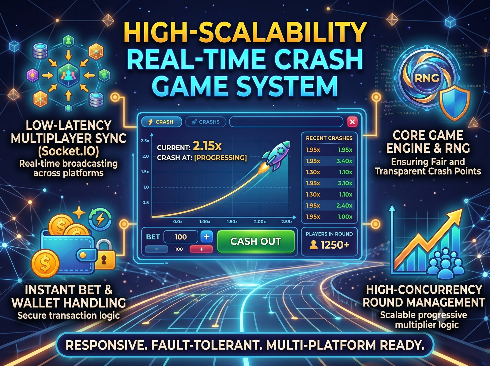

1. Executive Summary & Game Mechanics
Crash has emerged as one of the most popular formats in contemporary online gaming. In every round, a rocket or curve ascends with an increasing multiplier starting at 1.00x and growing exponentially. Players place bets before launch and must hit "Cash Out" before the rocket crashes at an unpredictable threshold.
The two critical technical pillars of this project are:
- Provably Fair Cryptography: Mathematically proving to skeptical players that the crash point was predetermined before bets were placed, and was not manipulated based on player betting volume.
- Low-Latency Concurrency: Processing hundreds of cashout requests arriving in the exact same millisecond right before a crash, ensuring that successful cashouts are honored atomically while post-crash requests are rejected cleanly.
2. The Provably Fair Mathematical Formula
The crash point is calculated using cryptographic HMAC hashing combining three inputs:
- Server Seed: A 256-bit cryptographically secure random string generated server-side. Its SHA-256 hash is published before bets open.
- Client Seed: A public string contributed by players or derived from external public block hashes (e.g., Bitcoin block header), ensuring the operator cannot predict the outcome alone.
- Nonce: An incrementing integer tracking the total rounds played.
3. Real-Time Round Loop & 50ms Tick Engine
4. Concurrency Engineering: Preventing Race Conditions
If a player clicks cashout at 1.99x while the server calculates crash at 2.00x, network packets can arrive simultaneously. Using Redis Lua scripts, the cashout check and balance crediting happen in a single atomic transaction. Either the cashout is registered strictly before the crash state flag is written, or it is rejected—guaranteeing zero double-spends and zero financial discrepancies.
Building High-Throughput Real-Time Games?
Whether you need provably fair algorithms, high-frequency tick loops, or atomic balance transactions, let's architect a resilient platform.
Discuss System Design with Chetan